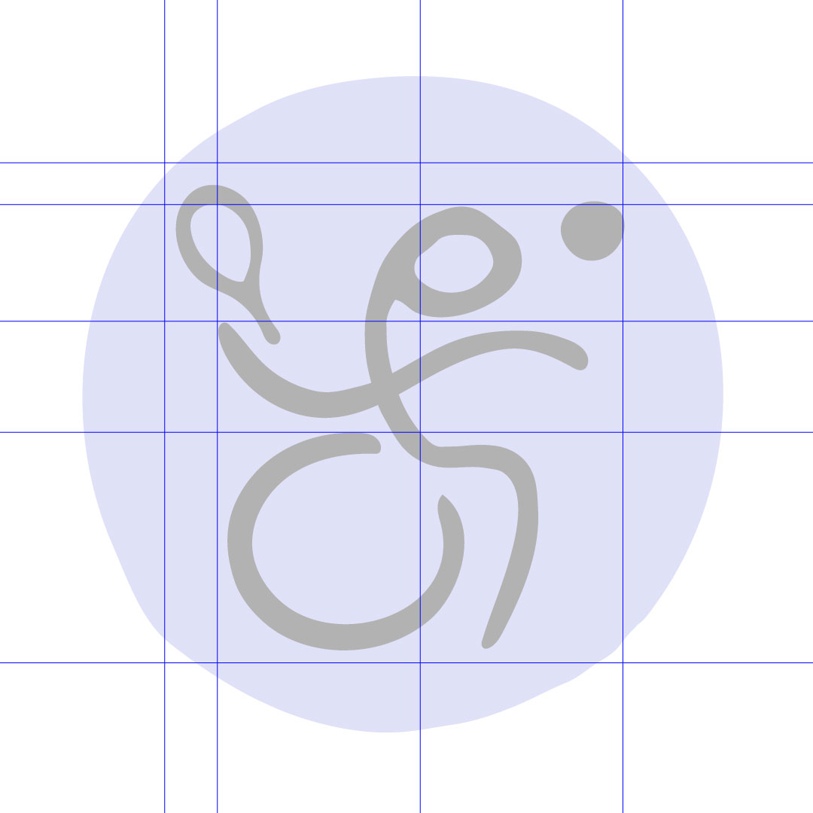
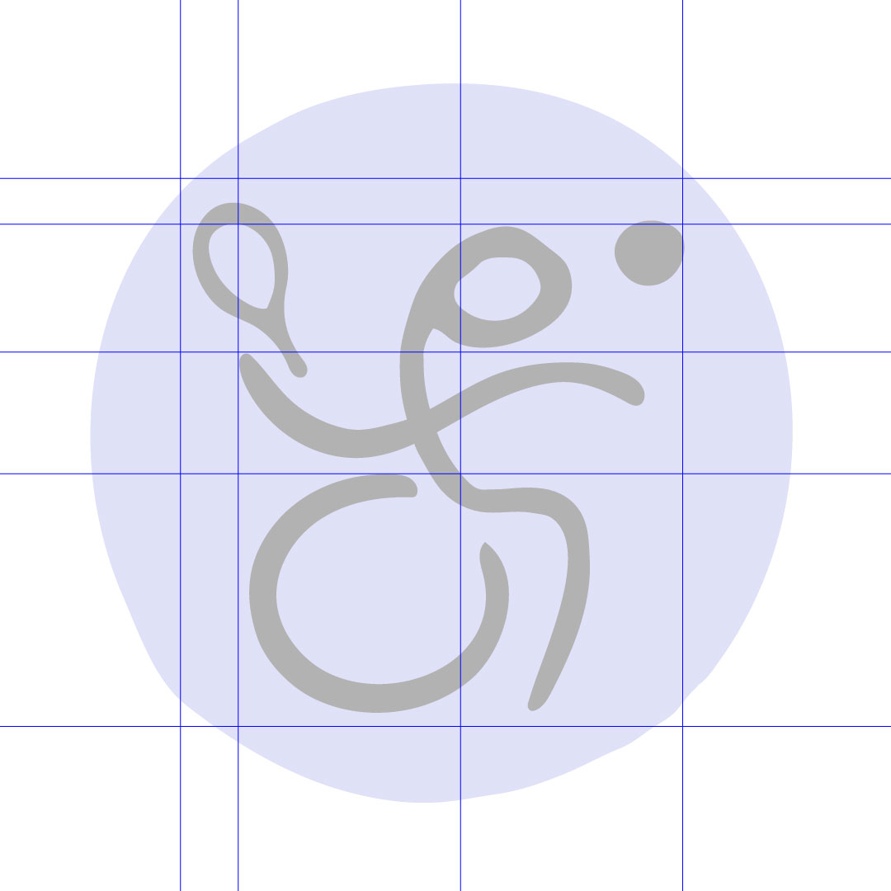
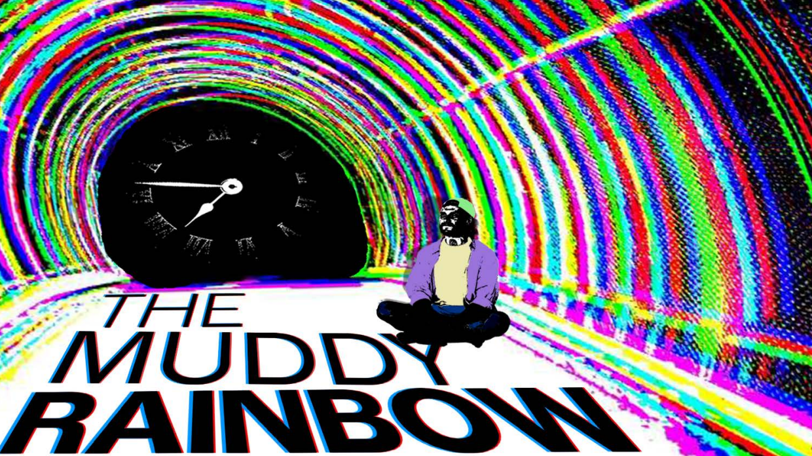
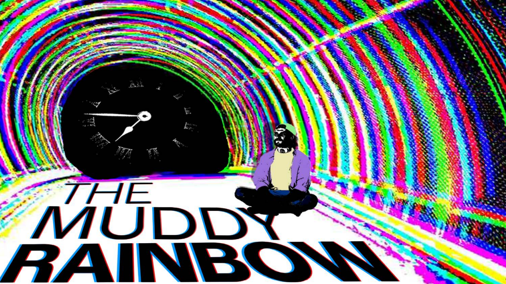

.PNG)
.PNG)
.png)
 



The task of this group project was to create forms of branding & logo work for a fictional Olympic event set in the year 2040 in Chiang Mai, Thailand.
My role in this peoject was to create the pictograms for select events along with accompanying tickets. I used my knowledge of linework and color to
create a circle pattern behind the pictograms that is meant to resemble the popular bamboo umbrellas you would find in that city. I also used
characteristics of Thai lettering to create the pictograms.
In this project, we were given a group of words to create animations with based on their literal definitions. I was given the words "Catch" and "Release"
and I created an animation in After Effects where a cage made up of the word "Release" swings back and forth and drops letters from the inside.
Then a giant C roll sover and catches the falling letters, creating the word "Catch" while the letters are falling. I also incorperated a number of sound
effects to the actions in the video.
The objective of this project was to create a banner for a made up show that we were responsible for making a rough plot idea for, along with stills
from a hypothetical title sequence. I gave my show a psychological horror theme with an element of time and titled it "The Muddy Rainbow". The plot
is about a man who wakes up in a reality where he gets everything he ever wanted but at the cost of a looming threat approaching as time passes.
The glitch effects were created in Adobe Illustrator with the use of royalty free images.
The task of this project was to create a piece with some kind of message using scanned cutouts and strictly black and white. My idea was to do a
piece about climate change where waves expand slowly out from the Earth. I created an earth cutout and a blossomish wave design and scanned
them into Photoshop. After that I used layers and did stacking of multiple waves to create the piece. I also created a version with a glitch effect just
to see what it might look like with color in it.